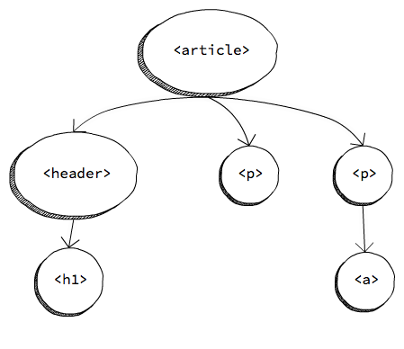
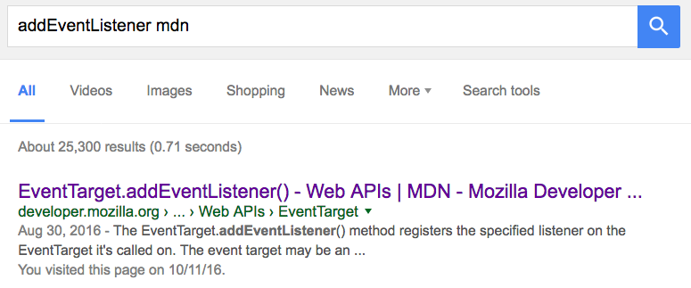

document<article>
<header>
<h1>Un título molón</h1>
</header>
<p>Bla bla bla.</p>
<p>
Más bla, bla, bla y
<a href="http://wikipedia.org">aquí un enlace</a>
</p>
</article>

Figura 1: Sección del DOM
Sólo selecciona un elemento (las ID's deben ser únicas)
<button id="show-fullscreen">Fullscreen</button>
const button = document.getElementById('show-fullscreen');
Esto usa la sintaxis de los selectores CSS para localizar uno (o varios) elementos
// selecciona el primer párrafo que encuentra
const paragraph = document.querySelector('p');
// selecciona el primer elemento con clase .warning
const label = document.querySelector('.warning');
// selecciona TODOS los párrafos
const allPars = document.querySelectorAll('p');
Más info sobre selectores para usar con querySelector en la MDN
querySelectorAll no devuelve un array, sino una NodeListArray sobre ella. Pero tiene la propiedad length y el operador [], así que podemos acceder en un bucle:const buttons = document.querySelectorAll('button');
for (const i = 0; i < buttons.length; i++) {
buttons[i].style = "display: none"; // hide buttons
}
También podemos iterar con Array.forEach o con for=/=of:
for (const b of buttons) {
b.style = "display: none";
}
buttons.forEach(b => {
b.style = "display: none";
})
parentNodechildNodespreviousSibling y nextSiblingCon esto podemos recorrer todo el DOM en cualquier dirección
innerHTMLbutton.innerHTML = 'Aceptar';
p.innerHTML = 'Párrafo con <b>negrita</b>';
styleconst previousDisplay = button.style.display;
button.style="display:none"; // oculta cualquier elemento
button.style="display:inline-block;" // muestra el botón
Nota: display:none es universal, pero para mostrar un elemento debéis elegir entre varios valores, los más comunes son inline, inline-block y block, pero hay muchos otros.
classListbutton.classList.add('loading');
button.classList.remove('loading');
button.classList.contains('loading'); // query
button.classList.toggle('loading'); // doesn't work on IE
Snippet de código online
innerHTMLconst button = document.createElement('button');
button.innerHTML = 'Start';
button.setAttribute('type', 'button');
// <button type="button">Start</button>
createElement está huérfano y no lo veremos renderizado en la páginaappendChild, insertBefore…document.body.appendChild(button);
Snippet de código online
replaceChildremoveChildconst button = document.getElementById('start');
button.parentNode.removeChild(button);
<input>, cuando seleccionamos una checkbox, etcétera)window también dispara eventos: load, resize…Event.addEventListeneronclick, onfocus…)// subscripción
button.onclick = function (evt) { /* ... */ };
// cancelar la subscripción
button.onclick = null;
Documentación en la MDN
const sayHi = function () { /* */ };
// subscripción
button.addEventListener('click', sayHi);
// cancelar la subscripción
button.removeEventListener('click', sayHi);
Documentación en la MDN
<section>
<button>Click me</button>
</section>
const section = document.querySelector('section')
section.addEventListener('click', function () {
console.log('Clicked…');
});
Snippet de código online
Event y tiene métodos para interrumpir el bubblingbutton.addEventListener('click', function (evt) {
console.log(evt);
});
Podemos evitar el bubbling con Event.stopPropagation
button.addEventListener('click', function (e) {
e.stopPropagation();
});
Event.preventDefault<a href="file.zip" download>Download zip</a>
const link = document.querySelector('a');
link.addEventListener('click', function (evt) {
// the browser won't detect the link has been clicked
evt.preventDefault();
});
Truco: añadir mdn a cualquier búsqueda

Figura 2: Buscador